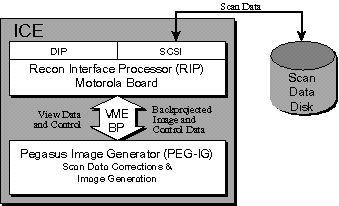
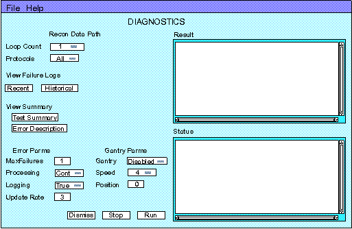

Proprietary to General Electric
Direction 5114045-800, Rev# 10
LightSpeed 4.X Service Information (Advanced)
Proprietary to General Electric |
Illustration 1: Reconstruction Data Flow Block Diagram

The Recon Data Path Test validates the image reconstruction hardware and software. Testing consists of creating images from scan data loaded by the diagnostic and stored on the scan data disk and validates their checksums. Errors detected by this diagnostic should be the same as those detected during patient scanning since the same image reconstruction hardware and software is utilized in both situations. Scouts, axial and helical type images are tested. Refer to Tables Table 1 through Table 5, which list the specific scan files and images used by this test.
Images are reconstructed silently and are NOT saved or displayed. The Recon Status Area on the Service Desktop provides the status of each completed image during the test. Any failure encountered is reported to the user and errors logged.
The scan database must contain the Image Generation Test scan files before testing can begin. If these files are not present, the test automatically loads the scan file from the SBC’s /usr/g/service/tools/added_tools/IMG_GEN directory into the scan database.
During the execution of the diagnostic, any error messages that occur are logged under the View Failure Logs [RECENT] button. Errors logged under [RECENT] are written to the failure.log file in the SBC directory: /usr/g/service/tools/added_tools/Image_Gen_Test. The next time the diagnostic is executed, the content of the failure.log file is appended to the [HISTORICAL] file called failure.log.bak and a new failure.log file is created. Note if there have been no failures during previous executions or recent executions, these logs will empty.
The Img_Axial.rat, img_helical.rat, and image_scout.rat files are read by the Recon Data Path Test at initialization. This file contains the protocols and image checksums used by the test.
The STOP button on the test main menu halts further testing and removes the shell window. The scan files used by this test remain on the disk until overwritten by another scan file.
The hardware and software required to create images is verified by this test. The hardware includes the Scan Data Disk, Reconstruction Image Process (RIP) board, and the Pegasus Image Generator (PEG-IG) board.
Table 1: img_scout.rat Test File
| Scan Protocol:Exam 19/1/1 | Scan Rx | ||||||
|---|---|---|---|---|---|---|---|
| Series | Scan Type | Phantom | SFOV | kV | mA | Time(sec.) | Range |
| 1 | scout | any | - | 120 | 80 | 1500mm | |
Table 2: img_axial.rat Test File
| Scan Protocol:Exam 19/5/1 | Scan Rx | ||||||
|---|---|---|---|---|---|---|---|
| Series | Scan Type | Phantom | SFOV | kV | mA | Time(sec.) | Range |
| 5 | axial | QA high res | small | 140 | 200 | 1.0 | 4x5mm |
Table 3: img_axial.rat Test File
| Recon Protocol: | |||||||
|---|---|---|---|---|---|---|---|
| Series | Algorithms | DFOV | Targeting | IBO | Peristalic | Axial sigmaB | Series/Image |
| 5 | Soft | 20 | Center | Off | Off | 4i | 105/1-4 |
| 5 | Detail | 9.6 | L | Off | Off | 4i | 105/5-8 |
Table 4: img_helical.rat Test File
| Scan Protocol: Exam 19/7/1 | Scan Rx | |||||||||
|---|---|---|---|---|---|---|---|---|---|---|
| Series | Scan Type | Phantom | SFOV | kV | mA | Time(s) | Range | Mode | Image Thickness | mm/Rotation |
| 7 | Helical | QA High Res | small | 140 | 140 | 0.8 | 4x3.75mm | Hispeed | 7.5mm | 22.5 |
Table 5: img_helical.rat Test File
| Recon Protocol: | |||||||||
|---|---|---|---|---|---|---|---|---|---|
| Series | Algorithms | DFOV | Targeting | IBO | Peristalic | Axial sigmaB | Helical Start | Helical Increment | Series/Image |
| 7 | Bone | 20 | Center | Off | Off | 2.0x | 1 | 50% overlap | 107/6-8 |
| 7 | Detail | 10 | Center | Off | Off | 1.33x | 0.5 | contigous | 107/9-11 |
| 7 | Detail | 25 | A/L 80% | Off | Off | 1.33x | 1 | 50% overlap | 107/17-21 |
The Image Generation Test is started by selecting [DIAGNOSTICS] then [IMAGE GENERATION] . The absence of this choice indicates the advance service is not loaded. Insert the service key and select [CHECK SECURITY] .
Touch the [RECON DATA PATH] button to bring up the Graphical User Interface, (GUI). The following GUI is displayed:
Illustration 2: Recon Data GUI

MENU OPTIONS - “A DESCRIPTION”
[RUN] - Pressing [RUN] invokes the reconstruction of images with user selectable parameters.
[LOOP COUNT] - Pressing [LOOP COUNT] displays a pull-down menu from which you can choose a loop count of 1, 5, or continuous. This determines how many iterations of the test to perform.
[PROTOCOL] - Pressing [PROTOCOL] displays a pull-down menu from which you can choose All, Axial, Helical, or Scout. This parameter determines which protocol to use, and consequently which images to reconstruct. Selecting All will reconstruct images using all available protocols.
[ERROR DESCRIPTIONS] - Upon the completion of a set of reconstructions Recon Data Path displays a summary of successes and failures (both checksum discrepancies and other reconstruction failures). More detailed information on the failures can be obtained by pressing the [ERROR DESCRIPTIONS] button. For additional information refer to Section 6, below.
[TEST SUMMARY] - A summary of the most recently run tests display in the results window by pressing the [TEST SUMMARY] button.
Image Checksum Errors: 0
SDC Prep Checksum Errors 0
SDC Post Checksum Errors 0
Total Successes: 24
Total Failures 0
Press "Error Description" Button for more information
[VIEW LOGS] - Recon Data Path logs information on reconstruction failures. The results of the most recent test can be viewed by pressing the [RECENT] button under the VIEW LOGS heading. The historical results can be viewed by pressing the [HISTORICAL] button.
[STOP] - A test can be aborted by pressing the [STOP] button.
[DISMISS ] - Pressing the [DISMISS] (terminate tool) button terminates the GUI.
[RECON DATA PATH] - This option executes the Image Generation Test after the number of passes are entered. A valid entry for the number of passes is from 1 to 9999. The default value is 1. Each pass takes approximately 1 minute to complete.
| NOTE: | Before executing the test, the Recon Status Box located at the top of the screen should display an “Idle” state. This state indicates the Image Reconstruction Process is ready to create images. Other possible states are “Active” and “Shutdown”. An “Active” state indicates the reconstruction process is busy creating images. You should wait for these images to complete before continuing. If a “Shutdown” state is indicated, the Image Reconstruction Process has been halted, usually due to an error condition. Restart the process by selecting [RECON MANAGEMENT] and “ [RESTART RECON] ” before beginning the test. |
After completing a test, pressing the [TEST SUMMARY] button or the [RECENT] button, will display a summary of the most recently run tests in the results window. If errors were encountered, the system message log and the [RECENT] error log should be examined after the test completes. To help determine the faulty FRU, select [ERROR DESCRIPTIONS] . A window displays at the same time as the summary information, allowing the user to simultaneously view which errors were detected and what they imply. This is shown in the message below.
IMAGE CHECKSUM ERROR Possible Causes: Bad IG Board SDC PREP CHECKSUM ERROR Possible Causes: Bad SDC Board SDC POST CHECKSUM ERROR Possible Causes: Bad SDC Board FAILED TO ENQUEUE See message log for more information TIMEOUT WAITING FOR RECON RESPONSE Possible Causes: Queue Paused. Verify that queue is active. Bad RIP board See message log for more information RECON REPLY ERROR Possible Causes: Bad RIP Board See message log for more information